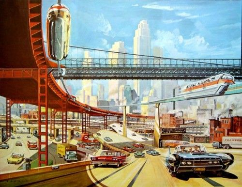

Prompt Engineering: The Art of Yesterday
Why prompt engineering has been obsolete before it even took off.
![]()
There’s a style of visual design I’m inordinately fond of called Raygun Gothic. It’s hard to describe what the hell exactly one needs to be on to enjoy it, but think of it like the aesthetic from the latter Fallout games with a more optimistic outlook on the future. Gibson described it as “the future that never was”, and I think that’s a pretty apt description.

We get these competing futures in technology all the time. Every idea is a gateway to a possible future, and purely by logic it stands to reason that most will never come to pass. But oh, does that make them no less appealing when they first emerge. They rise like the sun, with abundant promises. They place themselves in our hands, and we can’t help but imagine what they could be. And most of the time, we’re left with what Ronnie Janoff-Bulman so beautifully described as “a little sadder, and a little wiser”. This is not a bad thing. It’s just the way things are in an industry that’s still really run by Schumpeterian waves of creative destruction.
I think prompt engineering is one of those ideas. It’s a beautiful idea, and it’s one that I’ve been thinking about for a while. But I think it’s also one that’s been obsolete before it even took off. And like a love affair that never went anywhere but gave one some temporary joy, we’re better for having had it, but we’re also better off moving on.
Prompting, engineering
The idea behind prompt engineering is really not all that shockingly novel. It reminds me of something a friend of mine, who primarily works in embedded programming, said: most of his work, he said, was about writing code in a way to get the compiler to produce the kind of assembly he wanted. In other words, he was writing code to get the compiler to write code for him. Prompt engineering is the same thing, but for language models. We’ve all done this – all of us have done bits of compiler hacking by trying to phrase things just the right way for the compiler to give us what we wanted (because we were too lazy to actually write the whole thing in assembly, but damn if we didn’t want it our own way).
And so, the idea of taming a complex model by gently perturbing inputs to get us the outputs we desire is nothing novel. We’ve been doing this all the time. What is somewhat novel is that we’re ‘tricking’ a stochastic system here. The stochasticity and high dimensionality of LLMs together mean that the responses to queries exhibit the nonlinearities we like to know and love in chaotic processes. In chaos theory, we ‘quantify’ chaotic behaviour using the Lyapunov exponent, which essentially is the degree to which infinitesimally close starting conditions result in divergent trajectories. In other words, it’s a measure of how much a system is sensitive to initial conditions. And LLMs are very sensitive to initial conditions – they accumulate their divergent trajectories over time as every token begets the next. This is why we can get such wildly different outputs from them by just changing a few words in the prompt.
\[\lambda = \lim_{t \to \infty} \lim_{|\delta \mathbf{Z}_0| \to 0} \frac{1}{t} \ln\frac{| \delta\mathbf{Z}(t)|}{|\delta \mathbf{Z}_0|}\]
The Lyapunov exponent, a measure of how minor (infinitesimal, specifically, hence \(\delta \mathbf{Z}_0 \to 0\)) changes in initial conditions (the input) result in divergent trajectories (the output). The Lyapunov exponent is a measure of how sensitive a system is to minor differences in initial conditions.
But this is also why prompt engineering is so hard. It’s hard because we’re trying to tame a chaotic system. And it’s hard because we’re trying to tame a chaotic system that’s also a black box. And we don’t exactly have a strong evidence-based methodology for this. We don’t have a rigorous way of testing whether our perturbations actually create the expected effect. In short, we are allegedly ‘engineering’ our prompts for a better outcome, when in reality, we have precious few methods for measuring if we actually get that better outcome. Some of the leading papers, such as those on tree-of-thought prompting, have rigorous methods for measuring the effect of prompts, but these are still very much in their infancy. And so, we’re left with a lot of guesswork, and a lot of trial and error. And that’s not engineering. That’s just hacking. And that’s fine, but it’s not engineering.
The art of yesterday
I think the reason why prompt engineering has been obsolete before it even took off is because it’s a solution to a problem that’s already been solved – by agents and chains.
Chains are sequences of queries that proceed in a largely deterministic manner.
Agents are task-driven semi-autonomous entities to perform tasks. They can operate on their own, making decisions based on their training and the input they receive. They are focused on reasoning and decision-making by using the LLM to determine what actions to take next.
Don’t get me wrong – good prompts are still going to be important. But it’s no longer a one-shot game. The prompt is no longer all that stands between you and the output you are looking for: there are other prompts, there are decisions, there is a complex ecosystem of processes, supervisors and determinators that govern the outcome.
Which makes prompt engineering largely obsolete the way ensemble models make building the perfect regression model obsolete. No amount of expertly hand-crafted regression models will ever beat an ensemble of mediocre at best models. The booster always wins. Clever aggregation of weak primitives will always beat a single strong solution. And so, prompt engineering is obsolete because it’s a single strong solution in a world where we can relatively inexpensively generate a lot of weak solutions that can be aggregated to produce a better outcome.
This makes prompt engineering not the dream job of tomorrow but the art of yesterday. It’s a beautiful art, and it’s one that I’m sure will continue to be practiced. But it’s not the future. It’s the past. The future lies in chains and agents.
Bardo
I think we’re in a bardo right now, a liminal state between the old and the new. The old is the world of prompt engineering, of one-shot solutions, of the single strong solution. The new is the world of chains and agents, of weak solutions that are aggregated to produce a better outcome. Solutions like chain-of-thought prompting occupy this middle space. They are not fully agentic, but they are beyond simple prompts seeking to create strong solutions, and closer to building chains and agentic architectures of weak solutions.
བར་དོ་ (Wylie: bar do) is a Tibetan word that describes a liminal state between life, death and rebirth.
Prompt engineering is in many ways a human brute force version of backpropagation: it’s a weak experiential form of tweaking inputs to get a desired kind of output, with the backpropagation algorithm beign replaced by “hm, this didn’t work, let’s run something else up the flagpole”. This is not an efficient use of human resources, the human intellect or the human spirit. But it’s all we had before the agentic shift that we’re currently experiencing, and so it attained its spot in the sun before more considered, better approaches could take its place. Prompt engineering was a short-lived future that could have been, but it is not the future that will be. Everywhere where innovation in this field happens, nobody is talking about prompt engineering anymore. We’re moving past it as we moved past crawling on all fours (at least on weekday nights) in our cognitive development towards walking and running.
Trying to hold on to prompt engineering at this point is holding on to the past for its own sake. The only parties who have an interest in this clinging are those who have made economic investments in an intermediate stage technology and are unwilling to consider those the cost of doing business and move on. There is, maybe, a future in which the evolutionary destiny of LLMs would have focused on better singular solutions. This one isn’t that. This world, for better or worse, is governed by connectionists. The most successful epistemic endeavour in the realm of machine learning – deep learning – is fundamentally connnectionistic, and relies on the aggregation of weak learners to produce a strong learner. And so, the future of LLMs is not in prompt engineering, but in the aggregation of weak solutions. And that’s a future I’m looking forward to.
Citation
@misc{csefalvay2023,
author = {{Chris von Csefalvay}},
title = {Prompt {Engineering:} {The} {Art} of {Yesterday}},
date = {2023-10-29},
url = {https://chrisvoncsefalvay.com/posts/prompt-engineering/},
doi = {10.59350/keztr-yx081},
langid = {en-GB}
}